此篇为漫画 330 话
柯哀与高佐的对标现在已经很广为人知，但我没想到这么早之前就有了这一对比也可以说是讽刺
对于一对 cp 来说一直都有一个问题，究竟是事业为重还是恋爱为重，这点可以说 73 一直有个明确的答案—即先事业后感情
典型代表：高佐（本篇佐藤以高木查案为重），秀由（二哥拿到七冠王后再求婚），京园（园子因京极放弃比赛来看自己而不愉悦），以及柯哀（哀永远在背后支持柯，M26 那句真喜欢让人等就是最好的证据）
那反观新兰呢？
真是讽刺啊
柯哀与高佐的对标现在已经很广为人知，但我没想到这么早之前就有了这一对比也可以说是讽刺
对于一对 cp 来说一直都有一个问题，究竟是事业为重还是恋爱为重，这点可以说 73 一直有个明确的答案—即先事业后感情
典型代表：高佐（本篇佐藤以高木查案为重），秀由（二哥拿到七冠王后再求婚），京园（园子因京极放弃比赛来看自己而不愉悦），以及柯哀（哀永远在背后支持柯，M26 那句真喜欢让人等就是最好的证据）
那反观新兰呢？
真是讽刺啊
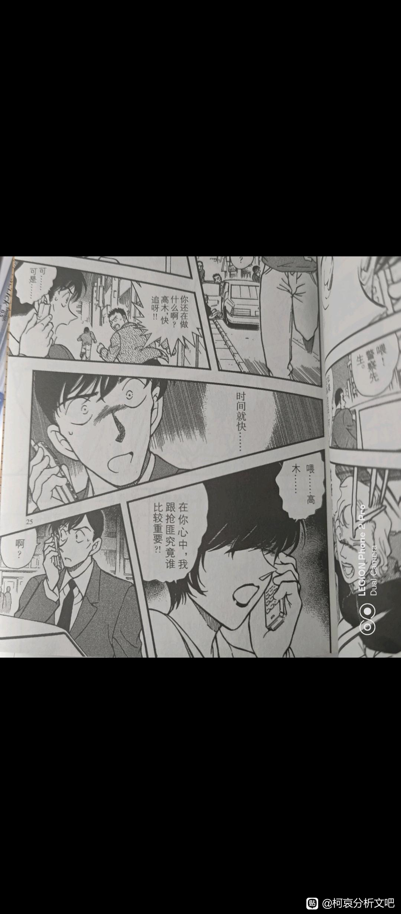
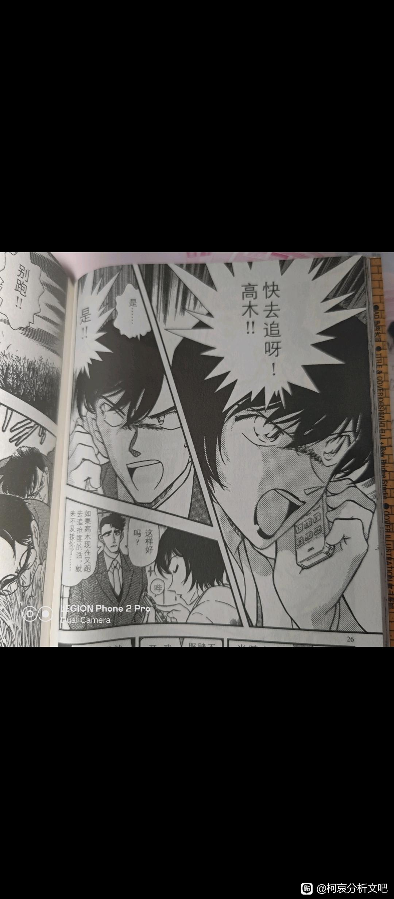
然而更狠的是本篇最后柯通过高佐联想到的是自己与兰，只能说柯啊，你什么时候才能明白感情的意义啊
其实典型代表也可以加上平和，和叶很喜欢平次推理时的样子（具体见 1116话）和叶也义无反顾地支持平次的查案与推理也主动加入过，这么一对比你新兰拿什么比
而巧合的是下一话正好是情人节篇，嗯刚子你是懂布局的
emmm，你品你细品
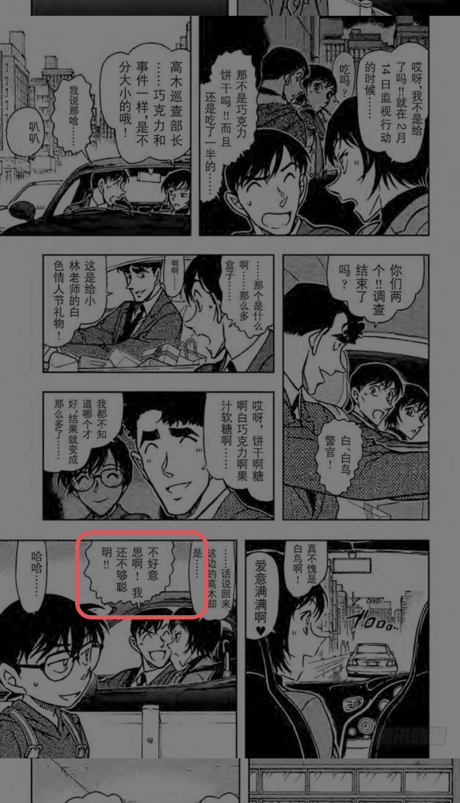
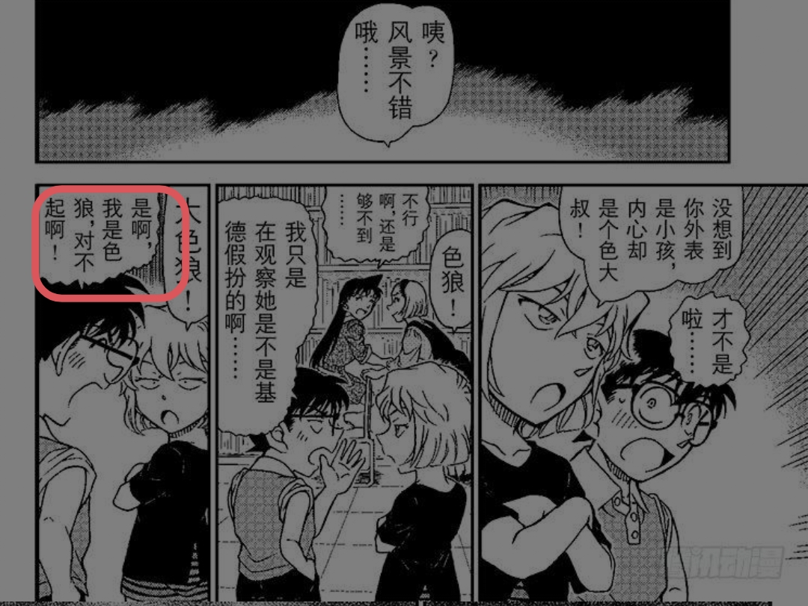
2023-10-04 09:27 | 贴吧用户_a4MAEUU:回复 青期º :你别说你还真别说2023-10-04 10:20 | ba沙漠浪人:2023-10-04 11:27 | 缕陈好:灰原和佐藤的眼神一摸一样，复制黏贴


我突然想，是否可以建立一个合集就叫《字字不提，句句不离》，里面半句话也不提新兰，全是这些【三小只早期会害怕尸体后期已经十分镇定】【佐藤对高木：案件重要还是我重要？当然是案件啊快去追犯人】的片段……
2023-10-04 11:35 | 贴吧用户_a4MAEUU:我之前写过一个与柯哀对应的人物与剧情里面写过一部分（不过肯定不全而且现成漫画我手里不多，不过可以考虑整这种合集
）
73？刚圣！！！
反正越看新兰越不合适，就感觉是剧情需要愣凑
2023-10-04 23:50 | 贴吧用户_a4MAEUU:愣凑不至于，给别的 cp 铺路和对比倒是真的
有一说一佐高这对是我最喜欢的配角CP，两方都塑造得很好的，就是高木被画风毁了。
2023-10-05 00:14 | 贴吧用户_a4MAEUU:高佐这一对在警视厅 cp 里刻画的最多2023-10-13 14:25 | 贴吧用户_GSyCDtX:回复 贴吧用户_a4MAEUU :是的，高木舍不得打手铐那一段真的挺感人的。
其实作品都到了一千多话了，新兰之间还在出甜甜圈pua，毛利兰希望新一输掉推理比赛，柯南看出来然后一脸懵逼这种剧情，明眼人都知道这屎味cp拆定了。也不知道觉得甜的那些人是怎么想的。
2023-10-05 02:31 | 贴吧用户_a4MAEUU:不不不对于对面来说这都是糖
朋友们啊我在考虑还要不要写这种对比（隔壁已经开始有人把我写的对比想成歧视了）
（隔壁已经开始有人把我写的对比想成歧视了）写对比
2023-10-05 03:06 | 贴吧用户_a4MAEUU:回复 贴吧用户_76WUK1D :隔壁有人把我之前写的那个对比发视频喷我是 qs 了都
佐藤：抢匪和我哪个重要？快去追啊，高木！
和叶：其实我想看的不是甲子园也不是宝冢，而是平次解开谜题后开心的表情呢！
青子：快斗这个人呢又自大又爱耍帅，但作为他的青梅竹马，偶尔也会想让他帅一点呢！
园子：但是请你不要伤害阿真啊，因为他几天后还有一场很重要的比赛，不能受伤的
和叶：其实我想看的不是甲子园也不是宝冢，而是平次解开谜题后开心的表情呢！
青子：快斗这个人呢又自大又爱耍帅，但作为他的青梅竹马，偶尔也会想让他帅一点呢！
园子：但是请你不要伤害阿真啊，因为他几天后还有一场很重要的比赛，不能受伤的
2023-10-17 23:20 | bearaven:回想起来，佐藤、和叶、园子恋爱喜剧线的你方唱罢我登台就是在哀登场之后开始的。那前后的剧情结构变化现在看来很有意思。
看这些分镜对比，真的好像的呢
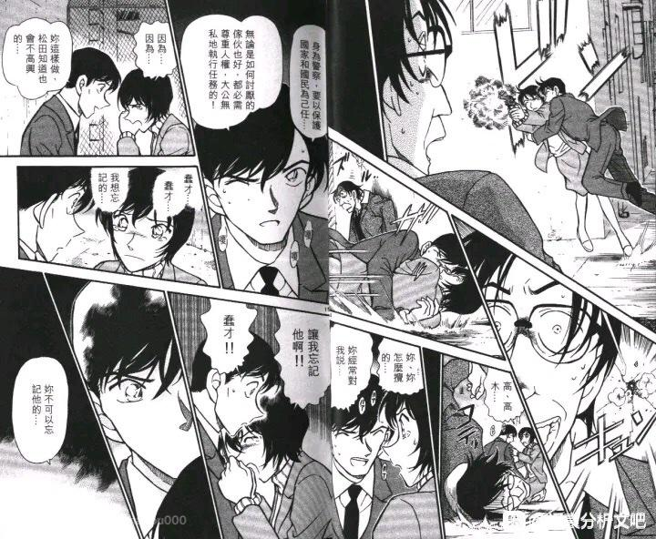
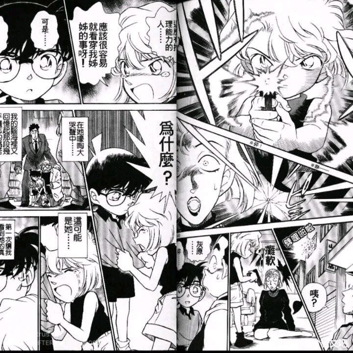
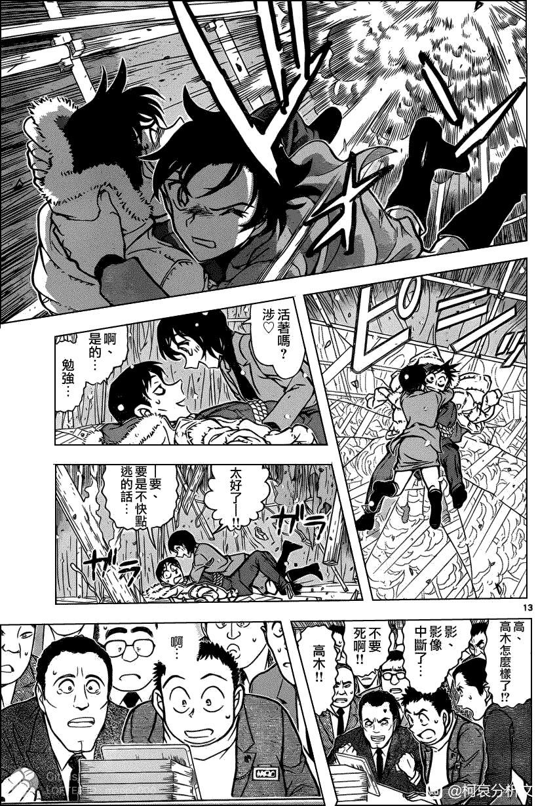
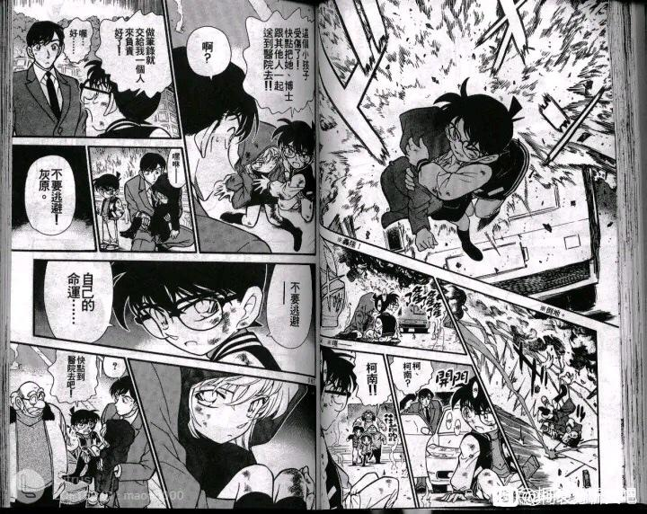
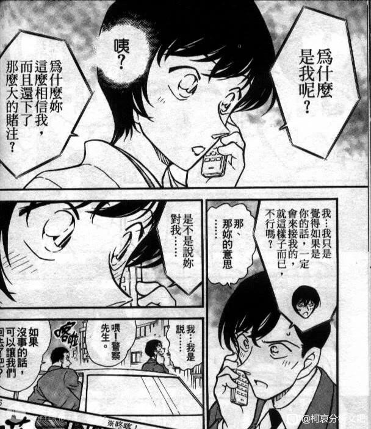
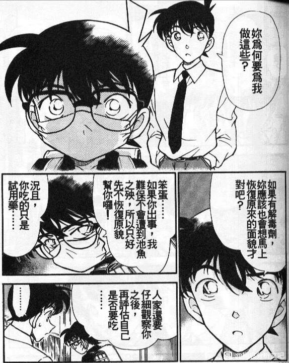
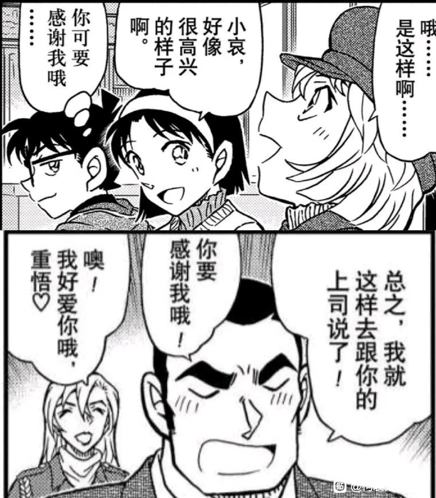
2023-10-12 05:24 | 这俩兄妹啊:天呐天呐！2023-10-13 14:28 | 贴吧用户_GSyCDtX:确实很像！2023-10-15 09:44 | 顾知栀ლ🌙:我靠

2023-10-10 11:52 | 贴吧用户_a4MAEUU:我总觉得在超话里见过你2023-10-10 12:36 | 贴吧用户_GWJG66e:回复 贴吧用户_a4MAEUU :不会吧